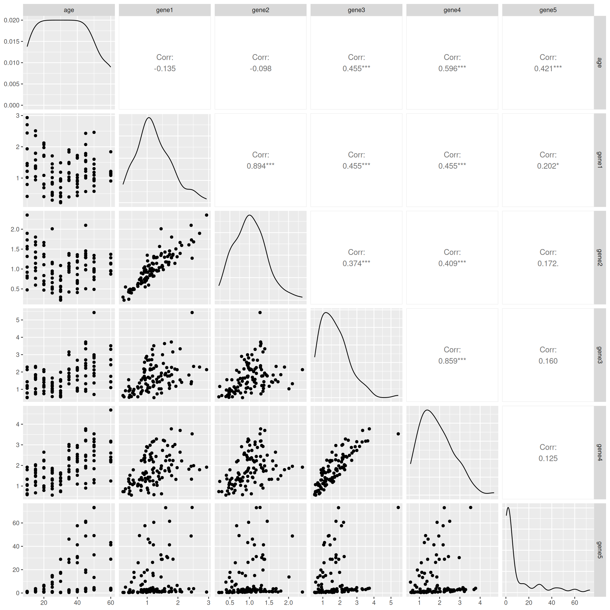

Clean, reshape, and manipulate real-world data using {dplyr} and {tidyr}
Integrate tidy data into downstream analysis (e.g., for visualization or statistical analysis)
Install {tidyverse} and Load the Package
# install.packages("tidyverse")library(tidyverse)
── Attaching core tidyverse packages ──────────────────────── tidyverse 2.0.0 ──
✔ dplyr 1.1.4 ✔ readr 2.1.6
✔ forcats 1.0.1 ✔ stringr 1.6.0
✔ ggplot2 4.0.1 ✔ tibble 3.3.1
✔ lubridate 1.9.4 ✔ tidyr 1.3.2
✔ purrr 1.2.1
── Conflicts ────────────────────────────────────────── tidyverse_conflicts() ──
✖ dplyr::filter() masks stats::filter()
✖ dplyr::lag() masks stats::lag()
ℹ Use the conflicted package (<http://conflicted.r-lib.org/>) to force all conflicts to become errors
Mini Data Project
This mini data project is based on a real project that focuses on gene expression across different time points.
A researcher has measured the expression levels of 20 genes (anonymed as 1 to 20) using the RT-qPCR technique. The gene expression was assessed in two structures of the mouse brain. Mice ranged in age from 10 to 60 days (10, 15, 20, 25, 30, 35, 40, 45, 50, 60 days), and the experiment was repeated with both male and female mice, with 6 animals (named from A to F) in each group.
According to the researcher, the data was stored in two files, one for each brain structure. Within each file, rows represent the different ages, and columns represent the gene, sex, and animal. For example, column 1MA represents the expression level of gene 1 from the male mouse A, column 15FD represents the expression level of gene 15 from the female mouse D.
A small Gaussian noise has been added to the original data, preserving the overall structure.
We will focus on the data from the brain structure 1. The aim is to perform an exploratory analysis to have a glimpse of the relationship between variables.
Import the Data
Please download the data_anonym_struc1_noise.csv file. Observe your data file:
Is there a header line?
What is the separator between columns?
Which character was used for decimal points?
Which character was used for missing data (between two seperators where there’s no value)?
NotePreview File
You can preview the data file in different ways, such as:
Opening it with a text editor;
Clicking the file name and selecting “View File” in the RStudio File Pane;
Or by using the terminal if you are using Unix-based system: head -n2 data_anonym_struc1_noise.csv (to view the first 2 lines) or more data_anonym_struc1_noise.csv (to scroll through the file and quit by typing q), which is recommended for large files.
Import the data_anonym_struc1_noise.csv into RStudio, you can use either:
the read_csv2() from the package {readr} (?readr::read_csv2), or
use the click-button way and copy-paste the code in your script.
Don’t forget to use/select the appropriate parameters to make sure you import correctly the data.
Name the data as data1. Convert your imported data to tibble format if it’s not the case.
New names:
Rows: 10 Columns: 241
── Column specification
──────────────────────────────────────────────────────── Delimiter: ";" dbl
(241): ...1, 1MA, 1MB, 1MC, 1MD, 1ME, 1MF, 2MA, 2MB, 2MC, 2MD, 2ME, 2MF,...
ℹ Use `spec()` to retrieve the full column specification for this data. ℹ
Specify the column types or set `show_col_types = FALSE` to quiet this message.
• `` -> `...1`
# or use the read_delim() with appropriate parameters# data1 <- read_delim(# "../exos_data/data_anonym_struc1_noise.csv", # delim = ";", locale = locale(decimal_mark = ",")# )
data1_long <-read_csv2(file ="../exos_data/data_anonym_struc1_noise.csv",locale =locale(decimal_mark =",") ) |>rename(age = ...1) |># not necessary if the next line "cols" based on indexpivot_longer(cols =-1, names_to ="id", values_to ="value") |>mutate(struc ="s1") |>extract(col = id,into =c("gene_id", "sex", "animal"),regex ="([0-9]+)([MF])([A-F])" )
Now, the data is ready for downstream analysis.
Manipulate the Data
For question 8 to 11, let’s focus on gene 1 from the data.
At age of 10 days, which animal has the highest expression value for gene 1 overall?
# overalldata1_long |>filter(gene_id =="1"& age ==10) |>arrange(desc(value)) |>head(1)
# A tibble: 1 × 6
age gene_id sex animal value struc
<dbl> <chr> <chr> <chr> <dbl> <chr>
1 10 1 F A 2.93 s1
Is there any missing value for gene 1? If yes, how to remove lines with NA?
# A tibble: 106 × 6
age gene_id sex animal value struc
<dbl> <chr> <chr> <chr> <dbl> <chr>
1 10 1 M A 1.93 s1
2 10 1 M B 0.413 s1
3 10 1 M C 1.21 s1
4 10 1 M D 1.40 s1
5 10 1 M E 1.02 s1
6 10 1 M F 0.795 s1
7 10 1 F A 2.93 s1
8 10 1 F B 1.47 s1
9 10 1 F C 2.44 s1
10 10 1 F D 2.71 s1
# ℹ 96 more rows
After removing NAs, how many animals are there for each sex in gene 1?
# A tibble: 2 × 4
sex median_gene1 mean_gene1 sd_gene1
<chr> <dbl> <dbl> <dbl>
1 F 1.21 1.37 0.639
2 M 1.09 1.11 0.488
Explore the Data
What kind of analysis would you like to perform with this data?
In statistics, it’s common to begin by exploring the dataset as a whole and visualizing the relationships between different variables. The function ggpairs() from the {GGally} package is useful for creating a matrix of scatter plots to examine the relationships between each pair of variables. First, let’s install the {GGally} package if it is not already installed.
install.packages("GGally")
Load the package and take a look at the help page for ggpairs(). How will you reshape the data1_long to provide the necessary data for the ggpairs() function?
library(GGally)?ggpairs
data1_wider <- data1_long |>pivot_wider(names_from ="gene_id",values_from ="value",names_prefix ="gene"# to avoid name starts with number )data1_wider
# A tibble: 120 × 24
age sex animal struc gene1 gene2 gene3 gene4 gene5 gene6 gene7 gene8
<dbl> <chr> <chr> <chr> <dbl> <dbl> <dbl> <dbl> <dbl> <dbl> <dbl> <dbl>
1 10 M A s1 1.93 1.51 1.18 1.32 1.22 0.916 1.11 1.12
2 10 M B s1 0.413 0.476 0.539 0.624 0.418 0.426 0.718 0.806
3 10 M C s1 1.21 1.32 1.22 1.07 1.38 1.28 0.829 1.10
4 10 M D s1 1.40 1.57 1.44 1.33 1.33 1.65 1.33 1.15
5 10 M E s1 1.02 0.918 1.06 0.816 0.848 1.47 1.13 0.941
6 10 M F s1 0.795 0.775 0.788 1.04 1.15 0.945 1.03 0.906
7 10 F A s1 2.93 2.36 2.13 1.92 0.846 1.93 1.38 0.532
8 10 F B s1 1.47 1.05 0.788 0.623 0.803 0.921 1.45 0.693
9 10 F C s1 2.44 1.73 1.44 1.33 0.892 2.87 1.88 0.646
10 10 F D s1 2.71 1.90 2.28 1.79 NA NA NA NA
# ℹ 110 more rows
# ℹ 12 more variables: gene9 <dbl>, gene10 <dbl>, gene11 <dbl>, gene12 <dbl>,
# gene13 <dbl>, gene14 <dbl>, gene15 <dbl>, gene16 <dbl>, gene17 <dbl>,
# gene18 <dbl>, gene19 <dbl>, gene20 <dbl>
To save space, we will focus on examining the relationship between age and the first 5 genes.
What did you observe from these scatter plots?
ggpairs(select(data1_wider, age, gene1:gene5))

The expression between gene 1 and 2 is similar, with a high coefficient of correlation. We observe the same trend between the expression of genes 3 and 4.
In addition, it seems that there are two groups of mice that express genes 3 and 5 in a similar way.
Calculate the correlation between gene 1 and 2. (?cor)
cor(x = data1_wider$gene1,y = data1_wider$gene2,use ="na.or.complet") # by default use the pearson's method
[1] 0.8935659
Draw a scatter plot using {ggplot2} to show the expression levels of genes 3 and 5. Color the points by different categorical variables that we have, i.e., age, sex, and animal.
Is there any categorical variable that can explain the groups we observed in the figure?
p_age <-ggplot(data = data1_wider, aes(x = gene3, y = gene5)) +geom_point(aes(color = age)) +labs(title ="Expression Level of Genes 3 and 5") +theme_light()p_age
Warning: Removed 16 rows containing missing values or values outside the scale range
(`geom_point()`).
p_sex <-ggplot(data = data1_wider, aes(x = gene3, y = gene5)) +geom_point(aes(color = sex)) +labs(title ="Expression Level of Genes 3 and 5") +theme_light()p_sex
Warning: Removed 16 rows containing missing values or values outside the scale range
(`geom_point()`).
p_animal <-ggplot(data = data1_wider, aes(x = gene3, y = gene5)) +geom_point(aes(color = animal)) +labs(title ="Expression Level of Genes 3 and 5") +theme_light()p_animal
Warning: Removed 16 rows containing missing values or values outside the scale range
(`geom_point()`).
Good job! 👏👏 You’ve made great progress in mastering data manipulation techniques.